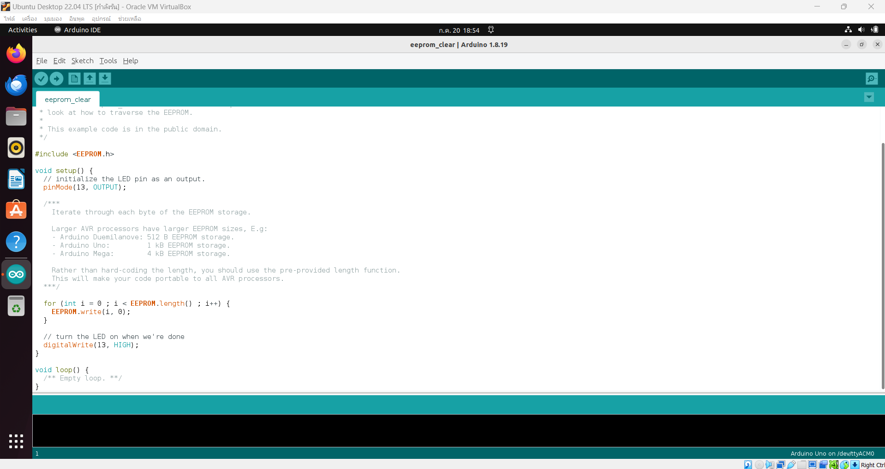
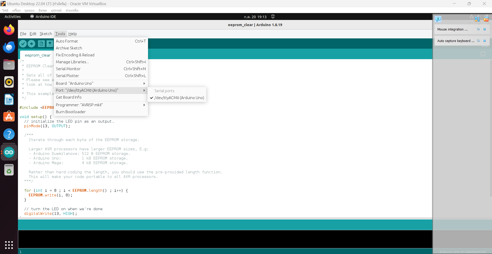
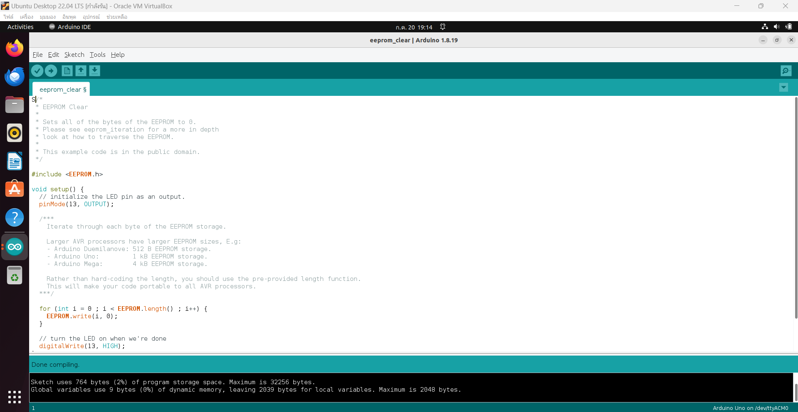

1.Install the Arduino IDE on the Ubuntu VM.
Open LXterminal and use "sudo apt update" command.then use "sudo apt install arduino.
2.Open the Arduino IDE and open the Blink sketch from the Arduino Examples.
3.Select Arduino Uno board and Serial Port
3.Select Arduino Uno board and Serial Port
Select Arduino Uno board
Select Serial Port